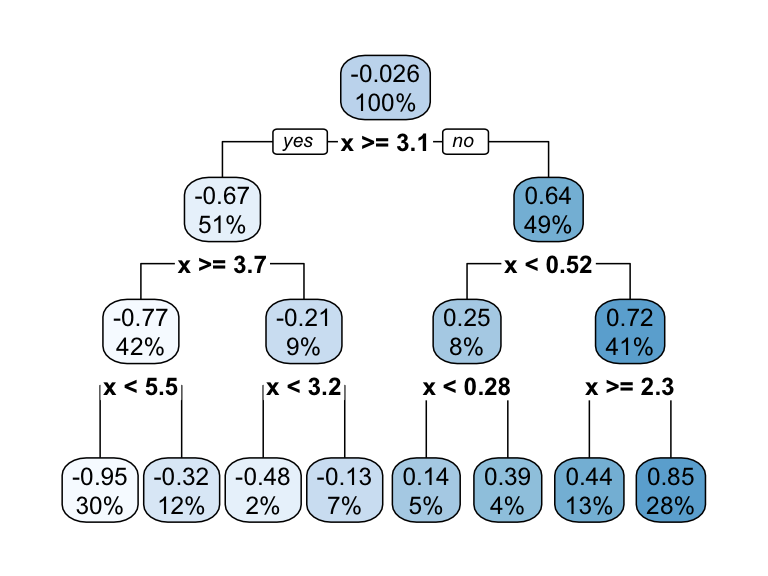
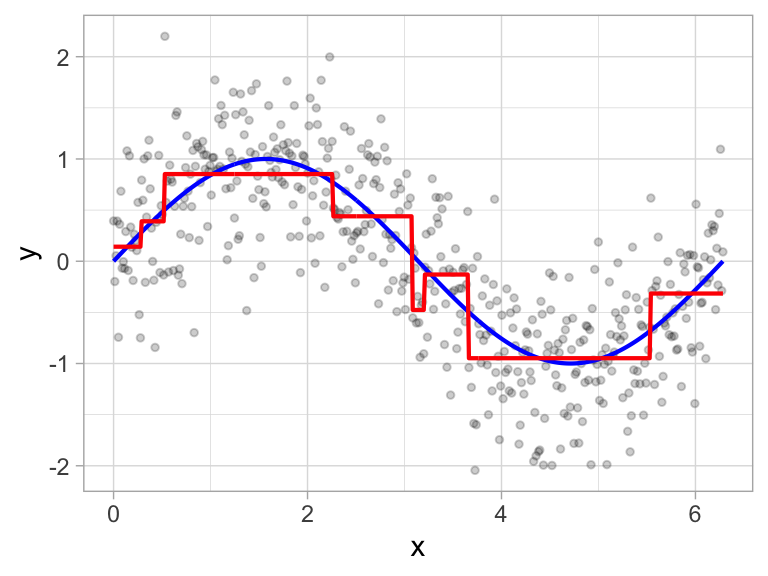
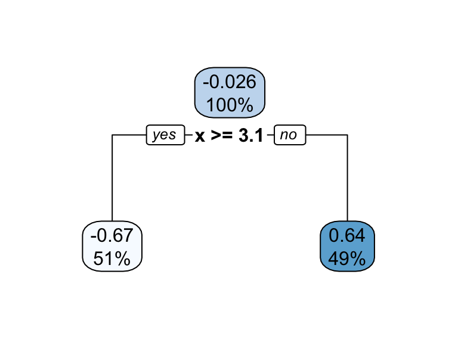
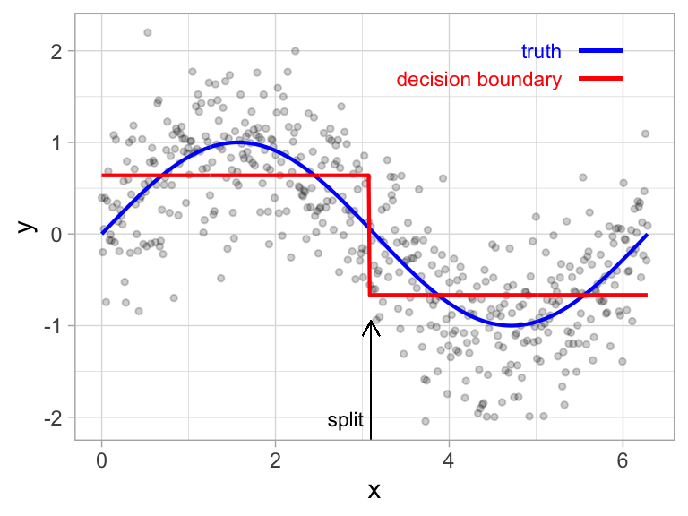
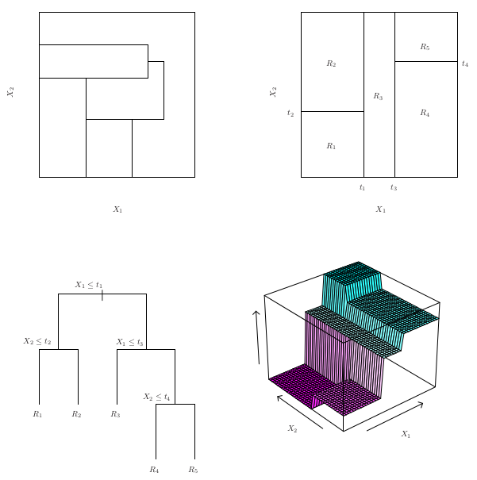
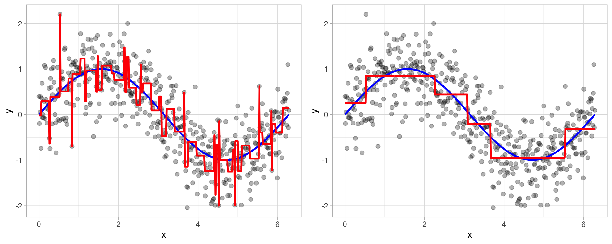
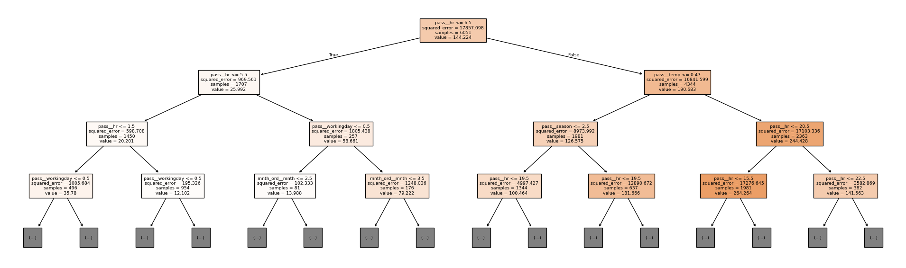
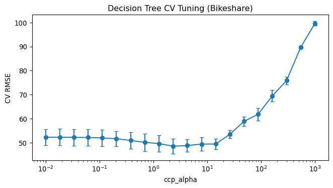
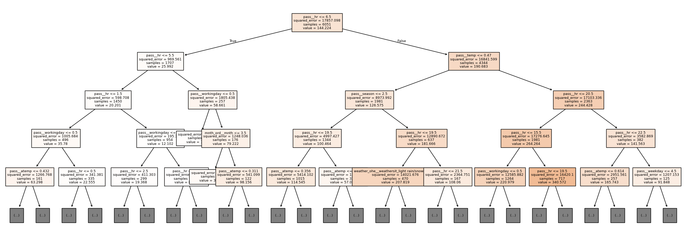

| Loading ITables v2.6.2 from the internet... (need help?) |
MATH 4025: Decision Trees
Dr. Eric Friedlander
Tree-Based Methods
- Idea: stratify or segment the predictor space into simple regions
- Splitting rules used to segment the predictor space form a tree
- Can be used for both classification and regression
- Single tree called decision tree
- Simple and useful for interpretation
- Not the best in terms of prediction accuracy
- Much more powerful: grow multiple trees and combine results
- Bagging and boosting
- Most powerful methods for tabular data are typically tree-based methods
Terminology for Trees
- Every split is considered to be a node
- First node at the top of the tree: root node (contains all the training data)
- Final nodes at the bottom of tree called leaves or terminal nodes
- Decision trees typically drawn with root at top and leaves at bottom
- Nodes in middle of tree called internal nodes
- The segments of the trees that connect nodes are known as branches
Terminology for Trees


Building a Tree
- Select predictor \(X_j\) and cut point \(s\) such that splitting the predictor space into the regions \(\{X|X_j < s\}\) and \(\{X|X_j \geq s\}\) leads to the greatest possible reduction in SSE
- For any \(j\) and \(s\), define \[R_1 = \{X|X_j < s\} \quad \text{and} \quad R_2 = \{X|X_j \geq s\}\]
- Find \(j\) and \(s\) that minimize \[SSE = \displaystyle \sum_{i \in R_1}\left(y_i - \hat{y}_{R_1}\right)^2 + \sum_{i \in R_2}\left(y_i - \hat{y}_{R_2}\right)^2\]
- For a new observation in region \(R_j\): predict the mean of training observations in \(R_j\)
- Repeat process on each new region; continue until stopping criterion is reached
Building a Tree and Prediction


Building a Tree and Prediction
Building a Tree and Prediction

From ISLR
Building a Tree: The Greedy Algorithm
- Anyone know what a greedy algorithm is?
- Computationally infeasible to consider every possible partition
- Idea: top-down, greedy approach known as recursive binary splitting
- Top-down: begins at the top of the tree (root contains all data)
- Greedy: at each step, make the best split right now rather than looking ahead
- Important consequence: ordinal vs. one-hot encoding of categorical predictors can change the tree!
- Stop when each terminal node has fewer than some minimum number of observations
Overfitting
- The process described above is likely to overfit the data
- One (bad) solution: require each split to improve performance by some amount
- Bad idea: sometimes seemingly meaningless cuts early on enable really good cuts later on
- Good solution: pruning
- Grow a big tree and then prune off branches that are unnecessary
Tree Pruning

From Hands-On Machine Learning, Boehmke & Greenwell
Bias-Variance Trade-Off
- How does tree size relate to the bias-variance trade-off?
- Would larger trees have higher or lower bias?
- What about variance?
- Larger tree → lower bias, higher variance
- Smaller (pruned) tree → higher bias, lower variance
Cost-Complexity Pruning
- Grow a very large tree \(T_0\), then prune it back to obtain a subtree
- Also called weakest link pruning
- Select subtree \(T \subset T_0\) which minimizes \[SSE(T) + \alpha \times |T| = SSE(T) + \alpha \times (\text{# of terminal nodes of } T)\]
- What should happen to the tree as we increase \(\alpha\)?
- Larger \(\alpha\) → more penalization for complexity → fewer leaves → simpler tree
- What should happen to bias and variance as we increase \(\alpha\)?
- Larger \(\alpha\) → higher bias, lower variance
- How should we choose \(\alpha\)? Cross Validation
Regression Trees in Python
Data: Bikeshare
Bike sharing systems are a new generation of traditional bike rentals where the whole process from membership, rental, and return has become automatic. Through these systems, users can easily rent a bike from a particular position and return it at another position. Documentation
Cleaning the Data
# Drop leakage columns and ID column
bike = bike_raw.drop(columns=['casual', 'registered', 'day']).copy()
bike.shape(8645, 12)casual+registered=bikers→ data leakage if kept as predictorsdayis an integer index with no predictive meaning
Train/Test Split
Preprocessing
preproc = ColumnTransformer([
# Ordinal encoding for month — order matters for greedy splitting!
('mnth_ord', OrdinalEncoder(categories=[month_order]), ['mnth']),
# One-hot encode weather situation
('weather_ohe', OneHotEncoder(drop='first', sparse_output=False), ['weathersit']),
# Pass numeric columns through as-is
('pass', 'passthrough',
['season', 'hr', 'holiday', 'weekday', 'workingday',
'temp', 'atemp', 'hum', 'windspeed'])
])mnthis encoded ordinally so the greedy splitter can use it as a continuous variable- Compare: one-hot encoding creates 12 binary columns — each split can only check one month
weathersitis nominal (no natural order) → one-hot encode
Fitting a Small Tree
small_pipe = Pipeline([
('preproc', preproc),
('tree', DecisionTreeRegressor(max_depth=4, random_state=4025))
])
small_pipe.fit(X_train, y_train)
feature_names = list(small_pipe.named_steps['preproc'].get_feature_names_out())
fig, ax = plt.subplots(figsize=(20, 6))
plot_tree(small_pipe.named_steps['tree'],
feature_names=feature_names,
filled=True, max_depth=3, fontsize=7, ax=ax)
plt.tight_layout()
plt.show()Fitting a Small Tree

Each node shows: split condition, squared error, number of samples, predicted value.
Effect of ccp_alpha
for alpha, label in [(0.0, 'Low (0.0)'), (50.0, 'High (50.0)')]:
pipe = Pipeline([
('preproc', preproc),
('tree', DecisionTreeRegressor(ccp_alpha=alpha, random_state=4025))
])
pipe.fit(X_train, y_train)
t = pipe.named_steps['tree']
print(f"ccp_alpha={label:12s} depth={t.get_depth():3d} leaves={t.get_n_leaves():4d}")ccp_alpha=Low (0.0) depth= 28 leaves=5706
ccp_alpha=High (50.0) depth= 10 leaves= 30- Higher
ccp_alpha→ more pruning → simpler tree
Tuning ccp_alpha with CV
bike_folds = KFold(n_splits=5, shuffle=True, random_state=4025)
# ccp_alpha range: ~0.01 to 1000 (R's cost_complexity is scaled differently)
param_grid = {'tree__ccp_alpha': np.logspace(-2, 3, 20)}
tree_pipe = Pipeline([
('preproc', preproc),
('tree', DecisionTreeRegressor(random_state=4025))
])
tree_grid = GridSearchCV(
estimator=tree_pipe,
param_grid=param_grid,
cv=bike_folds,
scoring='neg_root_mean_squared_error',
return_train_score=True
)
tree_grid.fit(X_train, y_train)GridSearchCV(cv=KFold(n_splits=5, random_state=4025, shuffle=True),
estimator=Pipeline(steps=[('preproc',
ColumnTransformer(transformers=[('mnth_ord',
OrdinalEncoder(categories=[['Jan',
'Feb',
'March',
'April',
'May',
'June',
'July',
'Aug',
'Sept',
'Oct',
'Nov',
'Dec']]),
['mnth']),
('weather_ohe',
OneHotEncoder(drop='first',
sparse_output=False),
['weathersit']),
('pas...
param_grid={'tree__ccp_alpha': array([1.00000000e-02, 1.83298071e-02, 3.35981829e-02, 6.15848211e-02,
1.12883789e-01, 2.06913808e-01, 3.79269019e-01, 6.95192796e-01,
1.27427499e+00, 2.33572147e+00, 4.28133240e+00, 7.84759970e+00,
1.43844989e+01, 2.63665090e+01, 4.83293024e+01, 8.85866790e+01,
1.62377674e+02, 2.97635144e+02, 5.45559478e+02, 1.00000000e+03])},
return_train_score=True, scoring='neg_root_mean_squared_error')In a Jupyter environment, please rerun this cell to show the HTML representation or trust the notebook. On GitHub, the HTML representation is unable to render, please try loading this page with nbviewer.org.
Parameters
Parameters
['mnth']
Parameters
['weathersit']
Parameters
['season', 'hr', 'holiday', 'weekday', 'workingday', 'temp', 'atemp', 'hum', 'windspeed']
passthrough
Parameters
Plot CV Results
tree_results = pd.DataFrame(tree_grid.cv_results_)
tree_results['mean_test_rmse'] = -tree_results['mean_test_score']
tree_results['std_test_rmse'] = tree_results['std_test_score']
fig, ax = plt.subplots(figsize=(7, 4))
ax.errorbar(tree_results['param_tree__ccp_alpha'],
tree_results['mean_test_rmse'],
yerr=tree_results['std_test_rmse'],
marker='o', capsize=3)
ax.set_xscale('log')
ax.set_xlabel('ccp_alpha')
ax.set_ylabel('CV RMSE')
ax.set_title('Decision Tree CV Tuning (Bikeshare)')
plt.tight_layout()
plt.show()
Select Best Model
1-SE Rule
best_idx = tree_results['mean_test_score'].argmax()
best_rmse = -tree_results.loc[best_idx, 'mean_test_score']
best_se = tree_results.loc[best_idx, 'std_test_score'] / math.sqrt(bike_folds.n_splits)
threshold = best_rmse + best_se
print(f"Best RMSE: {best_rmse:.3f}, 1-SE Threshold: {threshold:.3f}")
# Most parsimonious model (largest ccp_alpha) within threshold
candidates = tree_results[tree_results['mean_test_rmse'] <= threshold]
optimal_alpha_se = candidates['param_tree__ccp_alpha'].max()
print(f"1-SE optimal ccp_alpha: {optimal_alpha_se:.4f}")Best RMSE: 48.640, 1-SE Threshold: 50.035
1-SE optimal ccp_alpha: 14.3845Visualize Best Tree
best_pipe = Pipeline([
('preproc', preproc),
('tree', DecisionTreeRegressor(
ccp_alpha=tree_grid.best_params_['tree__ccp_alpha'],
random_state=4025))
])
best_pipe.fit(X_train, y_train)
feature_names = list(best_pipe.named_steps['preproc'].get_feature_names_out())
fig, ax = plt.subplots(figsize=(20, 7))
plot_tree(best_pipe.named_steps['tree'],
feature_names=feature_names,
filled=True, max_depth=4, fontsize=7, ax=ax)
plt.tight_layout()
plt.show()
Discussion Questions
- Why might ordinal encoding of
mnthmatter for a greedy splitter vs. one-hot encoding? - What’s the difference between encoding
hr(hour of day) as ordinal vs. one-hot? - Look at the best tree: which features appear near the root? Does that make sense?
Decision Trees
- Advantages
- Easy to explain and interpret
- Closely mirror human decision-making
- Can be displayed graphically and interpreted by non-experts
- Does not require standardization of predictors
- Can handle missing data directly
- Can easily capture non-linear patterns
- Disadvantages
- Generally lower prediction accuracy than other methods
- Not very robust — small changes in data can produce very different trees (high variance)